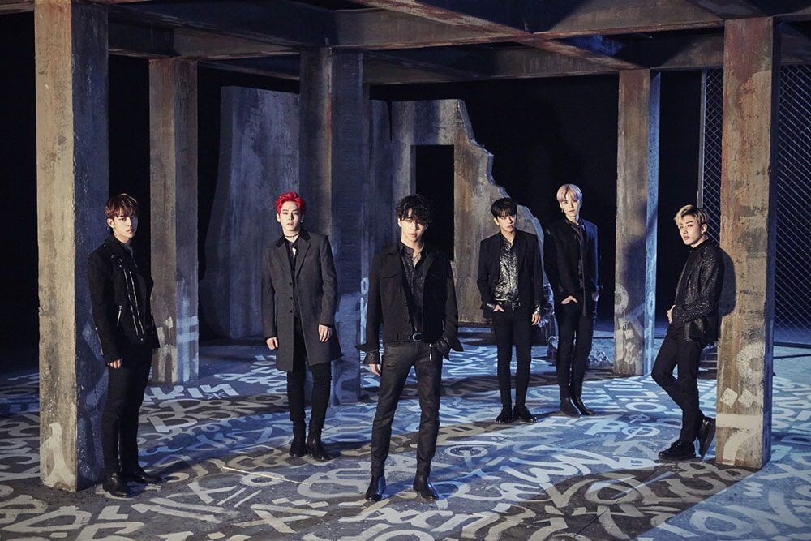

Best Absolute Perfect
B.A.P, un acrónimo para Best Absolute Perfect, es un grupo de hip-hop de 5 músicos surcoreanos formados en 2011 bajo la gestión de TS Entertainment.
Por Micaela Arias
Todo empezó cuando se reveló que una sub unidad de un grupo que aún no había salido a la luz, traerían consigo un single. El 2 de diciembre del 2011 salieron con su canción “Never Give Up”, que fue dedicada a todos los estudiantes próximos a hacer su exámen de ingreso a la universidad, para que no se den por vencidos ante los obstáculos que se presenten. El 27 de enero de 2012 sale a la luz el grupo completo bajo el nombre de “Best Absolute Perfect “ (B.A.P). Este es un grupo musical surcoreano que apunta al Hip hop, R&B contemporáneo y al Rock bajo la compañía TS Entertainment en Corea y King Records en Japón, además de estar bajo el sello discográfico “Sony Music” y “Gold Typhoon”. Está compuesto por 6 integrantes: Kim Himchan, Zelo, Daehyun, YoungJae, Jong Up y Bang YongGuk, siendo éste último líder del grupo.
GRAN DEMANDA
CONTRA TS
ENTERTAINMENT
Debutaron con su primer sencillo titulado “Warrior” que generó una numerosa audiencia, vendiendo 30000 copias en pocas horas. Este single fue muy importante para toda su carrera ya que llamó a un público muy especial ya que no era el típico grupo de idols a lo que estaba acostumbrado este país, lo que generó también un poco de controversia. En sus letras desde que comenzaron hasta la actualidad hablan acerca del sistema, de la falsedad, la traición y de la revolución, incluyendo tracks también de “autoayuda” e inspiración.
El 27 de noviembre de 2014, se informó de que el grupo había presentado una demanda contra su etiqueta, para anular su contrato debido a las condiciones injustas y distribución de beneficios. Los miembros declararon que tenían un contrato esclavista, la empresa no tenía en cuenta la salud de los miembros (cabe aclarar que a mitad de octubre de 2014 uno de ellos estuvo en urgencias por deshidratración y a pesar de que los empleados del hospital intentaron disuadir a los empleados de la compañía, tuvo que terminar la actuación con un vendaje para tapar una vía intravenosa).
Al día siguiente, TS Entertainment emitió un comunicado de prensa refutando las afirmaciones hechas, afirmando que “no han sido ni tales maltratos a los artistas ni cláusulas abusivas en el contrato” . Sin embargo, las afirmaciones de la empresa fueron desafiadas cuando B.A.P lanzó otro comunicado alegando falta de rendición de cuentas y el grupo estuvo considerando presentar cargos por difamación.
En esta ciudad gris, hay aire rancio y frialdad que está infiltrándose en los cerebros, sé consciente de la verdad corrupta y de la capa exterior de los sujetos rotos.
B.A.P
En esta ciudad gris, hay aire rancio y frialdad que está infiltrándose en los cerebros, sé consciente de la verdad corrupta y de la capa exterior de los sujetos rotos.
B.A.P
2015: SOLUCIÓN
A LA ENORME
DEMANDA
El 1 de agosto de 2015, la compañía TS Entertainment anunció que B.A.P regresó ya que ambas partes llegaron a un acuerdo. YongGuk dijo: “No importa la razón que fuera, reconocemos que este largo proceso ha sido doloroso para todos, sobre todo para los fans que siempre han sido la fuente de apoyo incondicional del grupo, y prometemos que daremos nuestro mejor esfuerzo en crear un futuro brillante para B.A.P.”
El 13 de diciembre B.A.P hizo su regreso con su octavo single “EGO” y el video musical para su cancion principal “Hands Up”. Ésta es un track hip hop electrónico que contiene un adictivo sonido de sintetizador. La letra entrega un inspirador mensaje, animando a todos a romper las paredes de prejuicios que los rodea. Hay que hacer un paréntesis en esta sección para informar que el CEO y fundador de TS Enterteinment, Kim Tae Song, falleció el 27 de abril del 2018, luego de haber tenido a su cargo diferentes grupos, tanto femeninos como masculinos,entre ellos B.A.P.
El 13 de diciembre de 2017 B.A.P hizo su regreso con su octavo single “EGO” y el video musical para su cancion principal “Hands Up”. Ésta es un track hip hop electrónico que contiene un adictivo sonido de sintetizador. La letra entrega un inspirador mensaje, animando a todos a romper las paredes de prejuicios que los rodea. Retomando un poco a la historia de este año, B.A.P realizó un concierto en solitario en Seúl llamado “BAP 2018 LIVE TOUR LIMITED en SEOUL” que duró del 21 al 22 de julio.
SALIDA DEL
LÍDER DEL GRUPO:
BANG YONG GUK
El 23 de agosto de 2018, TS Entertainment lanzó una declaración oficial anunciando que el contrato de Bang Yong Guk que ha estado con la agencia desde el 12 de agosto de 2011 llegó a su fin el 19 de agosto y él decidió no renovarlo. Declararon: “Hemos hablado extensamente con Bang Yong Guk y los demás miembros de B.A.P, y respetaremos su decisión de no renovar su contrato con nosotros. Queremos expresar nuestra gratitud a Bang Yong Guk por estar con nosotros hasta ahora, y le deseamos la mejor de las suertes en sus esfuerzos futuros”. Asique ek grupo continuará con cinco miembros (Himchan, Daehyun, Youngjae, Jongup y Zelo).